How to sign in, find your way around, read the division and sales dashboards, build verified reports, track HOD actions and manage people on the Marikar Group performance hub.
Document
__DOCID__
Issued
__DATE__
For
Marikar Group leadership, HODs and authorised users
Each chapter covers one part of the hub, with a screenshot of the real screen. Numbered pointers on the screenshots match the numbers in the text.
1
Pointer — a numbered marker on a screenshot. In the text it looks like 1.
Highlighter — a term worth remembering.
Sticky note — a practical tip from the people who built the hub.
Lens — a closer look at how a figure is calculated or where it comes from.
Tooltip — what you see when you hover or tap a figure on screen.
Caution — something that can go wrong, and how to avoid it.
Badge — a Hub Explorer achievement (chapter 12).
F5
Key — a keyboard key or button label.
Sticky noteIf you only read one chapter, read chapter 7, "the four lenses". It explains every number on the sales and inventory dashboard and where it comes from.
Background of the programme
The Marikar Group performance hub is the leadership team's single place for the half-year review: every division, every company, one clear view.
Marikar Group
Marikar Group has served Kerala and Tamil Nadu since 1910. Today it sells and services Honda two-wheelers (Honda Kerala, AMZES in Tamil Nadu, BigWing premium motorcycles), Royal Enfield motorcycles, Nissan cars, Royal Enfield parts through CSPW, and Canon office automation, alongside its corporate and HR functions. Each division reports to the group's HOD meetings.
Why the hub exists
At the 9 October 2026 HOD meeting the H1 FY 2026–27 review was presented from separate decks and spreadsheets, each in its own format. Figures were hard to compare, prior-year numbers were missing from some decks, and sales data lived inside TallyPrime where only Accounts could see it. The hub was commissioned to:
Bring every division on to one screen, in one format, with the same comparisons: H1 against the same months last year, and against the full year to 31 March.
Reconcile sales and inventory figures to the source. Every number on the sales dashboard is traced back to a TallyPrime register and its Grand Total, to the paisa.
Make the 31 HOD actions visible with owners, due dates and a league table, so follow-through is measured, not assumed.
Issue reports people can trust: every PDF and Excel download carries a document ID and a QR code that anyone can check.
Principles
Data → insight → actionOne version of the truthEvery figure reconciled to its sourceMeasure what matters, every monthDecide on evidence, not opinionFrom TallyPrime to the boardroomTrends beat snapshotsSpot it early, fix it early
Who built it
The hub was designed and developed by Dr. Babu B. of BPro Consulting & Technologies (www.drbabu.in | www.bpropms.com), the group's analytics partner, working with the divisions and Accounts. It is published at mmlpbi.bpropms.in, works in any modern browser, and installs on a phone as an app.
LensThe hub holds only aggregated figures. Customer names, phone numbers and vehicle numbers from the Tally registers never leave Accounts; the dashboards are built from monthly, daily and item-level totals.
Getting started
Open https://mmlpbi.bpropms.in on a computer, tablet or phone. You will see the sign-in page.
Signing in
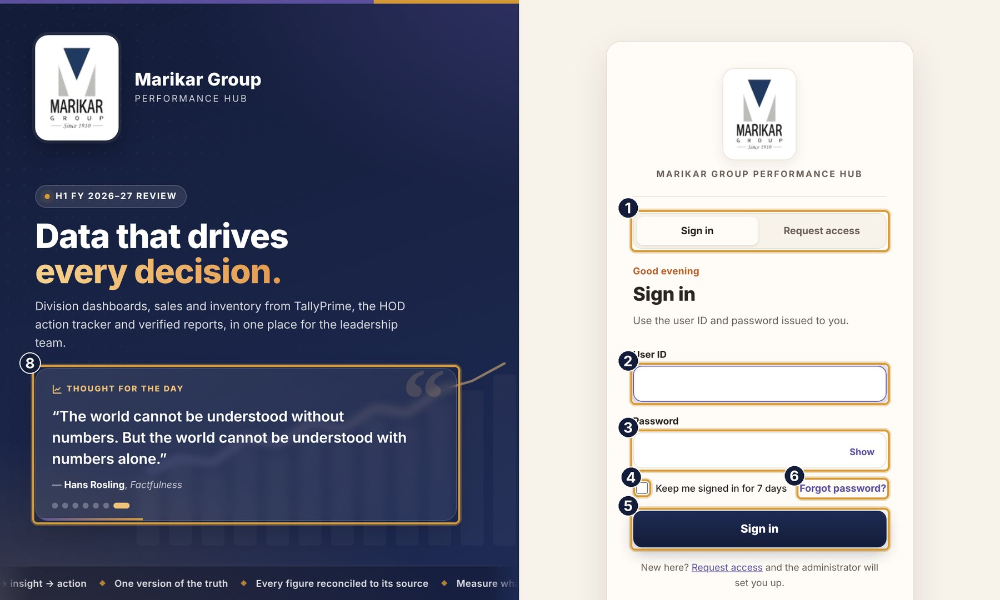
The sign-in page. The left panel shows a rotating thought on data; the right card is where you sign in.
Make sure the 1Sign in tab is selected.
Type your 2User ID. This is your work e-mail address; capital letters do not matter.
Type your 3Password. Use Show to check it. If Caps Lock is on, the page warns you.
Tick 4Keep me signed in for 7 days on your own device only. Otherwise the session ends after 12 hours or when you close the browser.
Click 5Sign in. You arrive at the hub, or at the page you were trying to open.
Forgot your password? Use 6. Need to check a document without signing in? Use 7Verify a document. The 8Thought for the day rotates every few seconds; the dots pick one.
CautionAfter several wrong attempts the page waits longer before each new try. That is deliberate. If you are stuck, use "Forgot password?" rather than guessing.
Requesting access
New to the hub? Choose the Request access tab and fill in the form. Within about ten minutes you receive an acknowledgement from mml@bpropms.in with your reference. When the administrator approves the request, a second e-mail from the same address brings your user ID and a temporary password, usually within one working day. Sign in with it and change it from the Settings page.
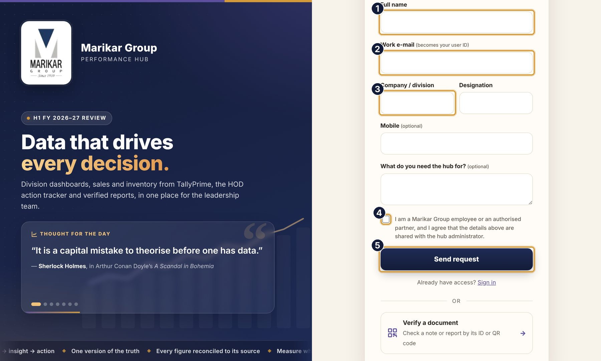
Request access: 1 full name, 2 work e-mail (it becomes your user ID), 3 company, division or function, 4 the divisions you need, 5 the confirmation tick, 6 Send request.
The company / division / function box suggests the corporate functions (Management / Corporate, Finance & Accounts, Admin, HR, IT, Internal audit, Marketing) as well as every division, plus "All divisions" and "Other"; you can also type your own. Under Access needed for, tick All divisions for group-wide access or tick the divisions you work with (one or more). The administrator sees exactly what you asked for and can approve it as it is, or adjust it, before you sign in for the first time.
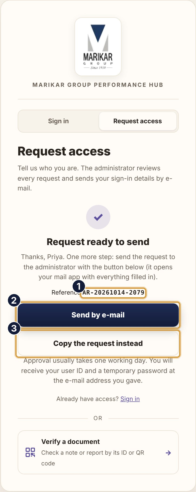
After you send: a 1 reference to quote, 2 a button that opens your mail app with the request filled in for the administrator, and 3 a copy option if your mail app does not open.
Sticky noteKeep the reference (it looks like AR-20261014-7618). If you need to chase a request, quote it.
Forgot your password
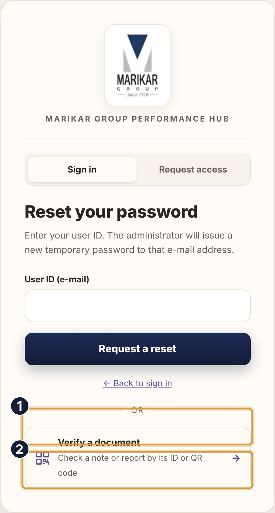
Enter your 1 user ID and 2 request a reset. Within about ten minutes a one-time link is e-mailed to that address; nobody else is involved.
The link opens the page below on the hub. It works once and for 24 hours. Choose a password that meets the three rules, type it twice and press Set this password. The password itself stays in your browser: only its fingerprint goes to the hub, through your mail app if the page asks you to send a message. Within about ten minutes the hub applies it and confirms by e-mail; then sign in. Every other sign-in of your account ends at that moment.
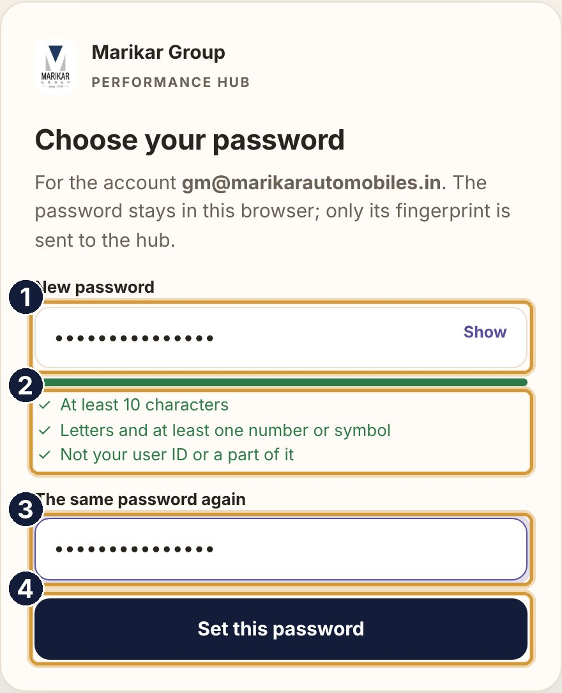
1 the new password, with the 2 three rules ticking off as you type; 3 the same again; 4 Set this password.
Sticky noteAlready signed in and want a new password? Settings → Password sends you the same link. Nobody, not even the administrator, ever sees or sends a password: a new account and an administrator's reset arrive as the same link.
Roles
Role
Can
Viewer
Open the dashboards, tracker, note and reports for the divisions on their account (all of them, or a chosen few); download PDF and Excel reports; verify documents; choose their own theme and menu layout.
Admin
Everything a viewer can, for every division, plus Settings → People: add people, change roles and divisions, reset passwords, remove accounts and act on access requests. An admin cannot touch super admin accounts or grant that role.
Super admin
Everything above for every account, and the token route for publishing changes directly.
Access by division
A viewer account carries a list of divisions: All divisions, or any set of Group vehicle sales, Honda Kerala, AMZES, BigWing, Royal Enfield, Nissan, CSPW, Canon / OAIP and HR. The hub then shows that person only what they cover: the Divisions menu lists their divisions and the groups those fall in, the division dashboards page shows only those cards, and the Sales & inventory tools (built from the Honda units' TallyPrime data) appear only for accounts with Honda Kerala or AMZES. Admins and super admins always see everything.
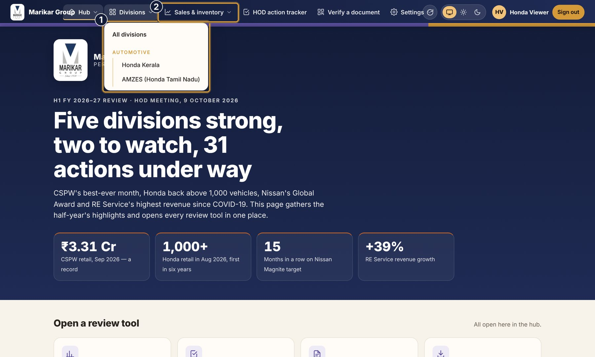
Signed in with an account limited to Honda Kerala and AMZES: 1 the Divisions menu lists only those two, under Automotive; 2 Sales & inventory is present because they are Honda divisions. A CSPW-only account would see neither.
The list is set when the request is approved (from what you ticked on the form) and can be changed at any time from Settings → People. A change applies from your next sign-in. If you open a page outside your divisions, the hub sends you back to the landing page with a short note; ask the administrator if you need it.
Installing the hub as an app
The hub invites you to install it on every visit until you do. Installed, it opens full-screen from your home screen or desktop, keeps working offline with the last data it saw, and shows an Update available message when a new version is published (tap Update to switch).
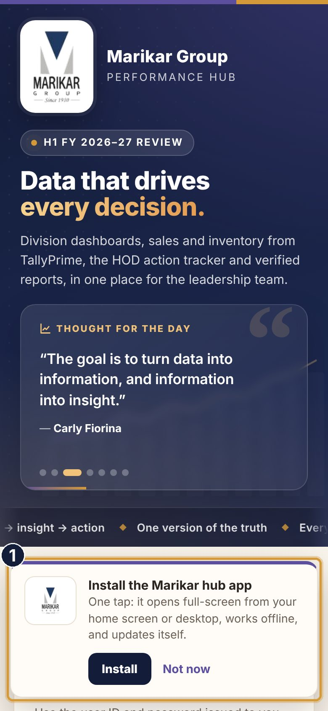
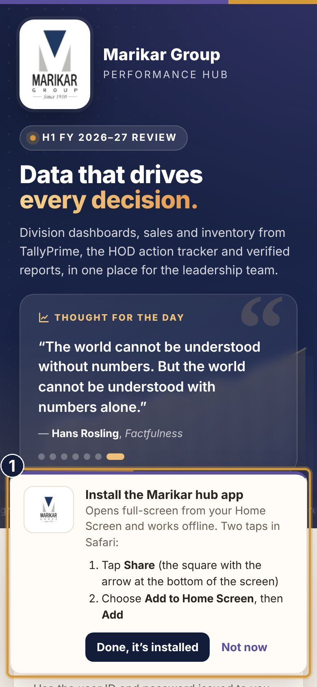
Left, Android / Chrome / Edge: 1 the card; Install opens the phone's own install dialog in one tap. Right, iPhone and iPad: Apple allows no one-tap install, so the card shows the two steps, Share → Add to Home Screen, and a "Done, it's installed" button.
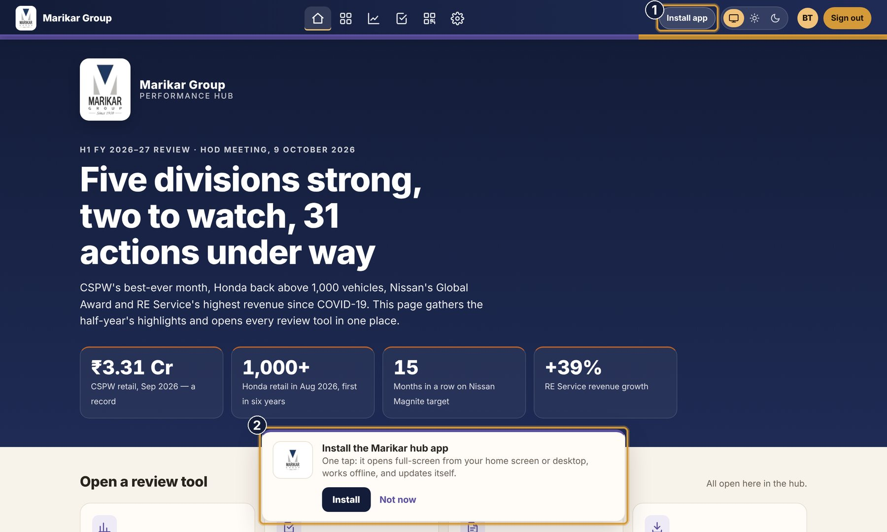
On a computer the 1Install app button sits in the bar and the 2 card appears at the foot of the page. Chrome and Edge install the hub as a desktop app with its own window.
Sticky note"Not now" hides the card for the current session only; it is back on your next visit. Once the app is installed, it never shows again. Long-press the app icon for shortcuts to the dashboard, the divisions and the tracker.
Finding your way around
Every page carries the same bar: the menu, a theme switch, your name and Sign out.
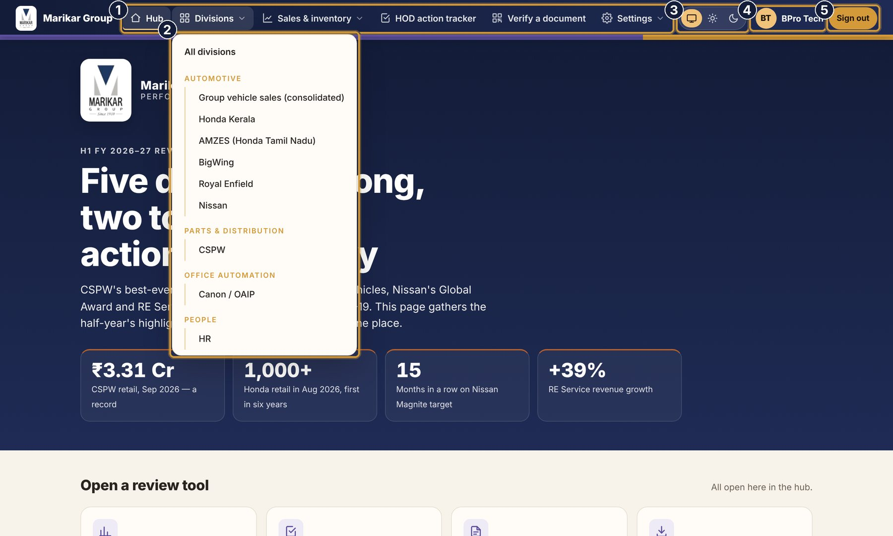
1 Main menu · 2 the Divisions submenu, with the division groups · 3 theme switch · 4 who is signed in · 5 Sign out.
The menu
Main item
Submenu
Opens
Hub
—
The landing page: headline figures, review tools, baseline and insights.
Divisions
All divisions · Automotive · Parts & distribution · Office automation · People
The division dashboards. Each division group is a consolidation page showing its divisions together; under it sit the divisions themselves. An account limited to some divisions sees only those (chapter 3, "Access by division").
Sales & inventory
Dashboard · Report builder · Reconciliation note
The TallyPrime-based sales and inventory views; shown to accounts covering the Honda divisions.
HOD action tracker
—
The 31 actions, league standings and roadmap.
Verify a document
—
Public page to check a document's ID or QR code.
Settings
Appearance · People
Your theme and menu layout, the sign-in report, and (for admins and super admins) account management and the account-changes log.
On screenHover a main item to open its submenu; on a touch screen tap once to open it and tap the item again to follow it.
Refresh
1Refresh, next to the 2 theme switch, reloads the page with fresh data and picks up a new version of the hub if one has been published. Use it when a figure, a request or an account change you expect is not showing yet.
Light, dark or system
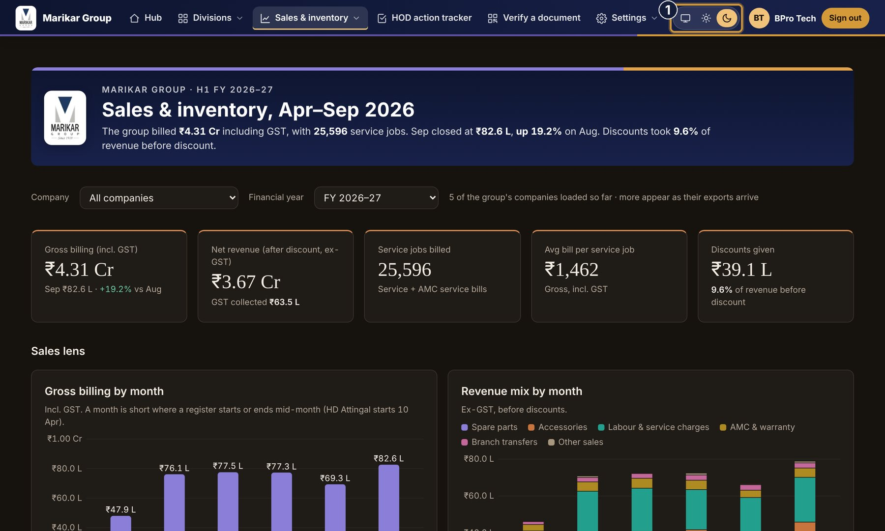
The 1 theme switch: System follows your device, Light and Dark force a theme. The choice is remembered on that browser.
Top bar or sidebar
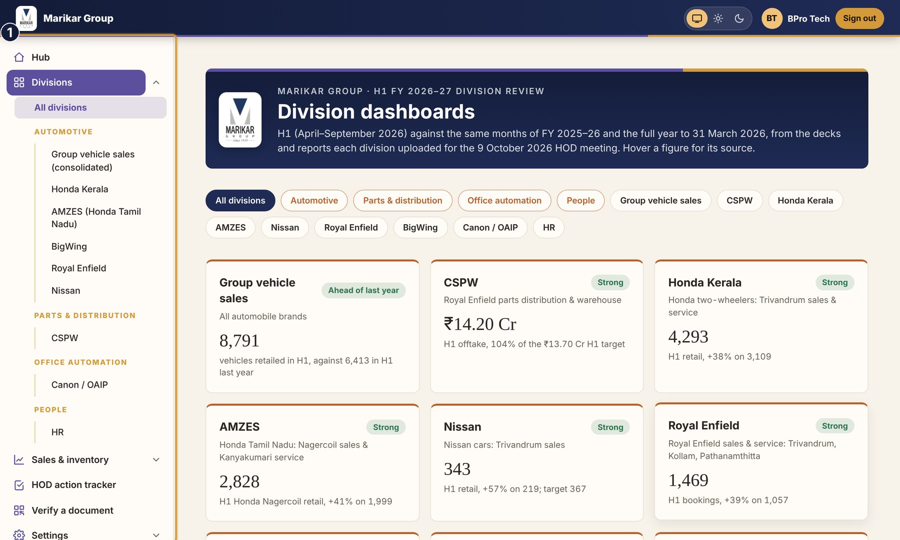
In 1 sidebar mode the full menu stays open on the left and remembers which sections you expanded. 2 switches back to the top bar. Change it any time in Settings → Appearance.
On a phone
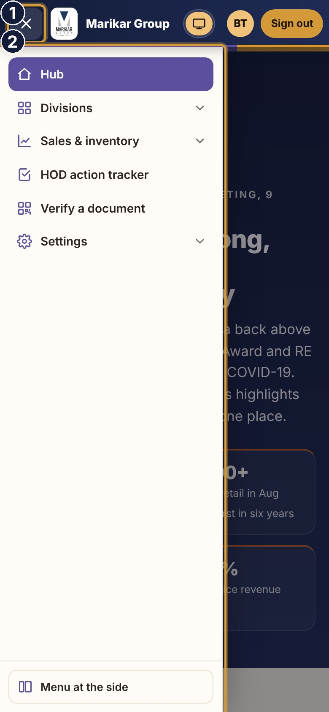
On phones the menu is a drawer behind the 1 ☰ button; 2 the same items as on a computer. Tap outside the drawer, or press Esc on a keyboard, to close it.
BadgeSwitch the theme and the menu position once each and you have earned the Navigator badge (chapter 12).
The hub landing page
The hub page is the half-year review at a glance: what happened, what to watch, and a door to every tool.
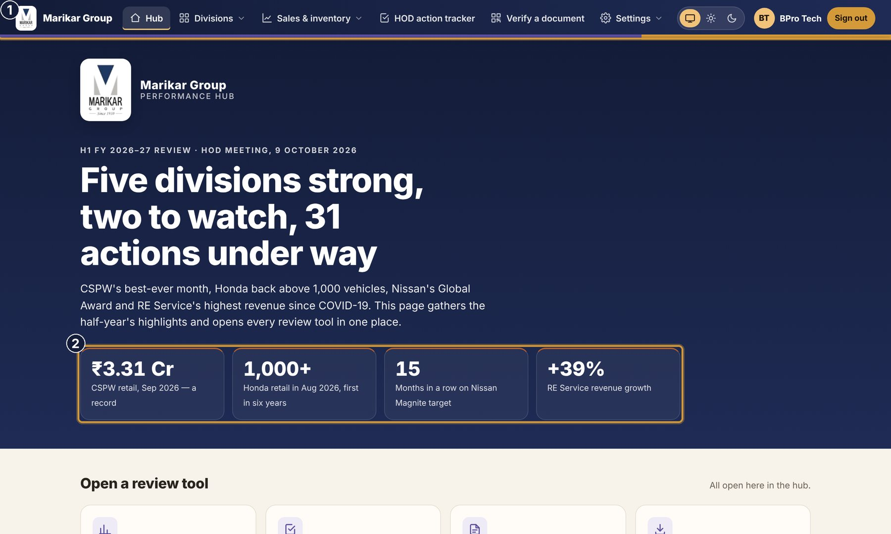
The hub: 1 the menu bar, 2 the headline figures from the HOD meeting.
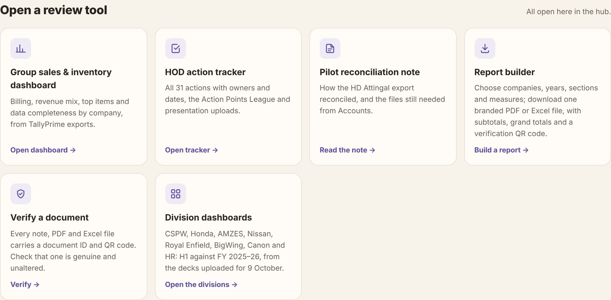
"Open a review tool": every tool is one click away. The same links are in the menu.
Below the tools the page gathers the FY 2025–26 baseline (revenue by line of business, the financial position), the Honda two-wheeler units' H1 panel drawn from the sales dashboard, and Insights for the H1 review, each ending with a question for the owner. These are typed figures from the HOD meeting and the provisional accounts; they are refreshed after each meeting.
LensThe Honda units panel on this page reconciles to the sales dashboard: ₹4.31 Cr gross billing, 25,596 service jobs, average bill ₹1,462, stock ₹27.8 L → ₹40.5 L. If the dashboard changes, this panel is updated with it.
Division dashboards
One view per division, built from the decks and reports each division uploaded for the 9 October meeting, with H1 FY 2026–27 against the same months of FY 2025–26 and the full year to 31 March 2026.
The overview
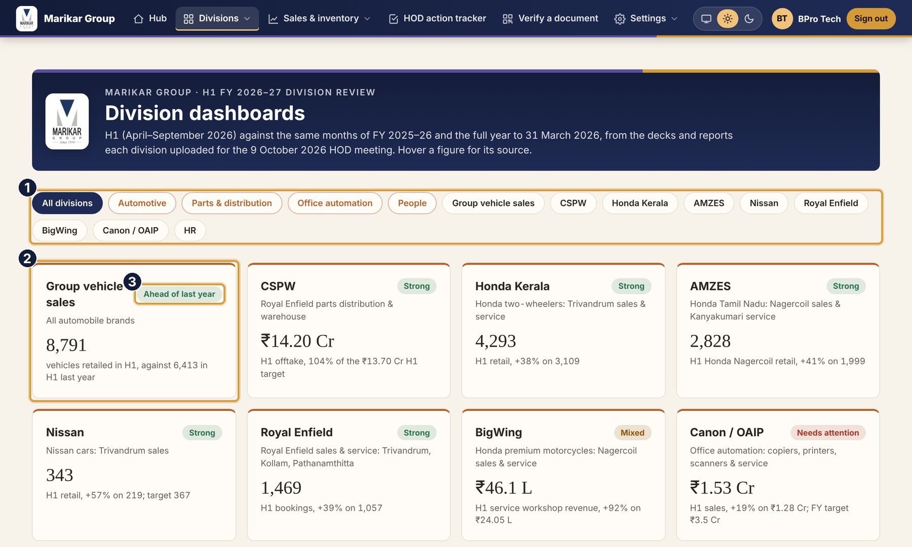
1 chips for every division and group · 2 a division card with its headline figure · 3 its status.
Each card shows the division's headline figure and a status pill: Strong, Mixed, Needs attention, Ahead of last year or Plan presented. Click a card or a chip to open the division.
Division groups
A division group consolidates several divisions on one screen. There are four: Automotive (group vehicle sales, Honda Kerala, AMZES, BigWing, Royal Enfield, Nissan), Parts & distribution (CSPW), Office automation (Canon / OAIP) and People (HR). Pick a group from the Divisions menu or the gold chips.
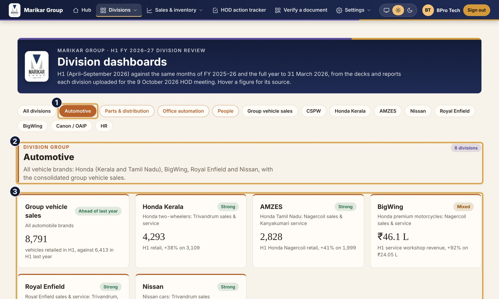
The Automotive group: 1 the group chip, 2 the group heading with its scope, 3 the six divisions it consolidates.
Reading a division page
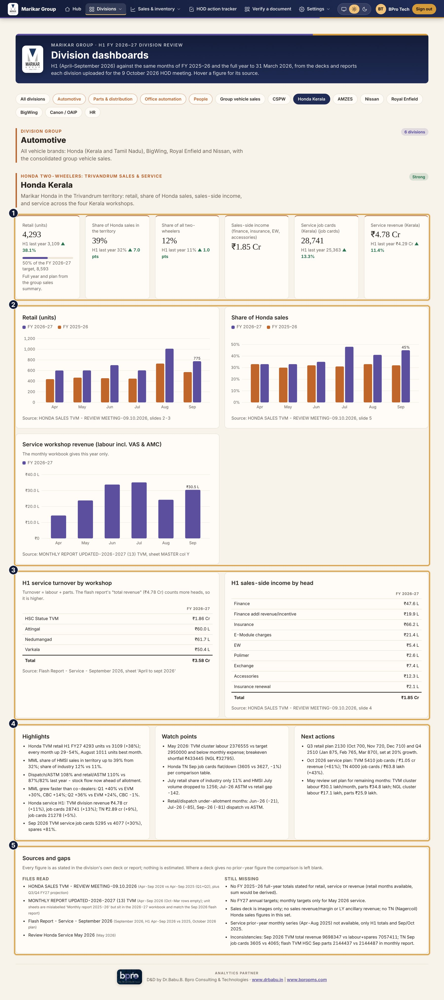
Honda Kerala: 1 KPI tiles with the prior-year figure and the change · 2 monthly charts · 3 breakdown tables with totals · 4 highlights, watch points and next actions · 5 the files each figure came from, and what is still missing.
On screenHover any KPI tile or chart point to see the figure, the prior-year figure and the source file it was read from.
LensNothing on a division page is estimated. Where a deck gives no prior-year figure, the comparison is left blank rather than guessed, and the gap is listed under "Still missing". Ask the division for the figure and it will appear.
Sales and inventory dashboard
Built from TallyPrime Service Bill Registers and Stock Summaries, one per company. Five Honda two-wheeler units are loaded: Attingal, Kulasekharam, Marthandam, Nedumangad and Varkala. The page reads top to bottom as four lenses.
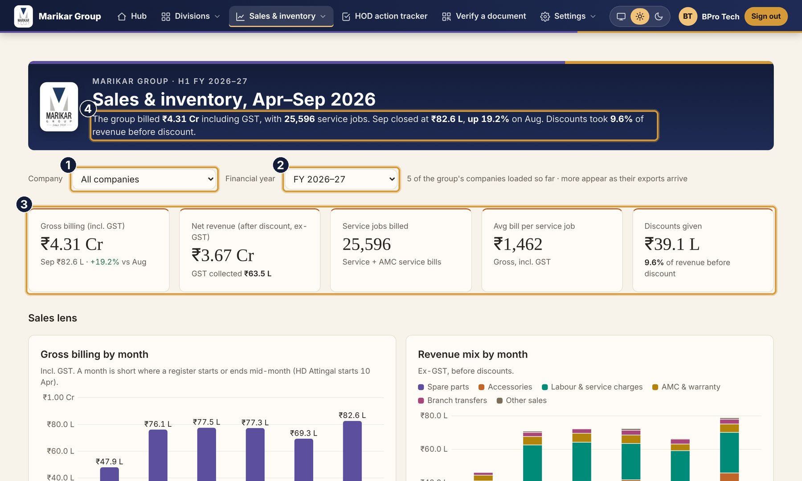
1 Company filter · 2 financial year · 3 headline figures · 4 the takeaway sentence, which rewrites itself for whatever you select.
Filters
The company filter shows one unit or all of them; the financial year filter opens on the latest year. Choose "All years" only when every company has both years loaded, otherwise a full year for one company is added to half-years for the others.
Headline figures
Figure
Meaning
Gross billing
Everything invoiced, including GST.
Net revenue
The income ledgers minus discounts, without GST.
Service jobs
Service bills and AMC service bills.
Average bill per service job
Service gross ÷ service jobs.
Discounts given
The discount ledgers, and their share of revenue before discount.
Lens 1 · Sales
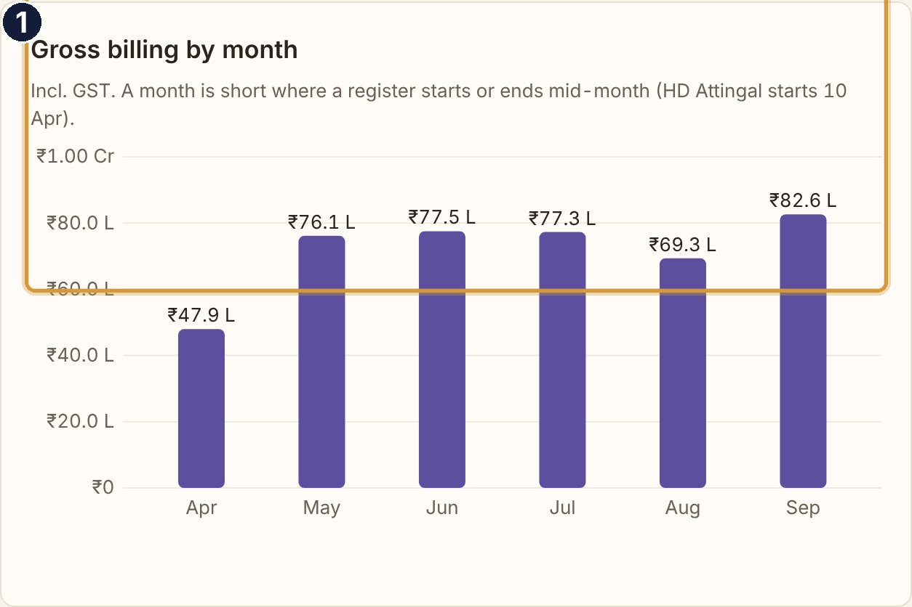
Gross billing by month. A month is short where a register starts or ends mid-month.
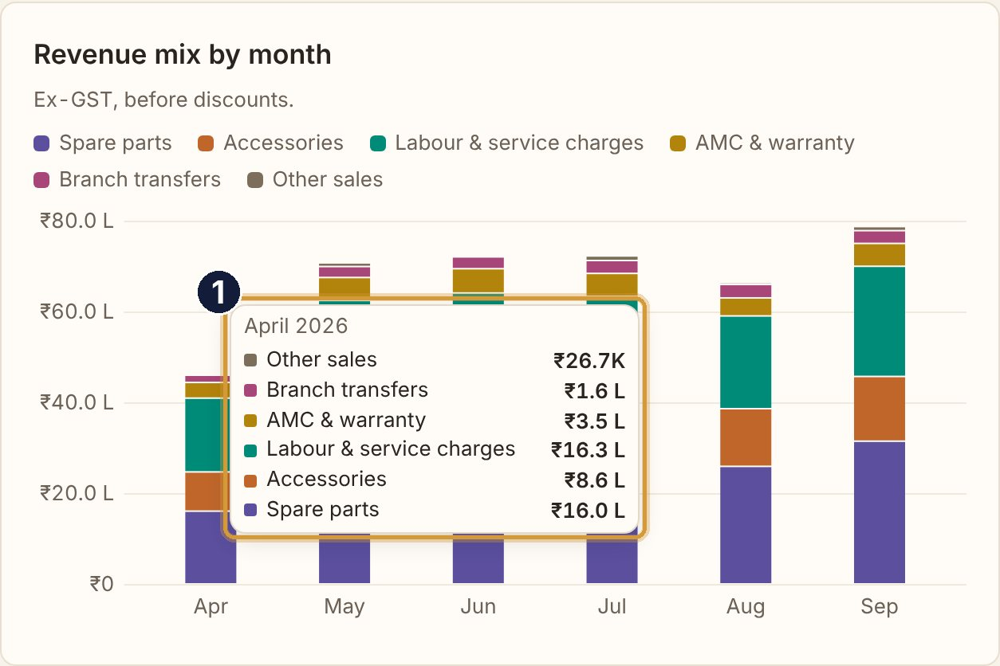
Revenue mix by month: hover a bar for the 1 tooltip with every stream's value for that month.
The sales lens also shows daily billing, where the revenue comes from (every income ledger ranked), totals by voucher type with the average bill, and the top parts and accessories sold with a search box and sortable columns.
LensEach register column is grouped by its name: spare parts, accessories, labour and service charges, AMC and warranty, branch transfers, other sales. Every unit names its ledgers differently; the grouping is done by the build script, and the full list is in the README.
Lens 2 · Year on year
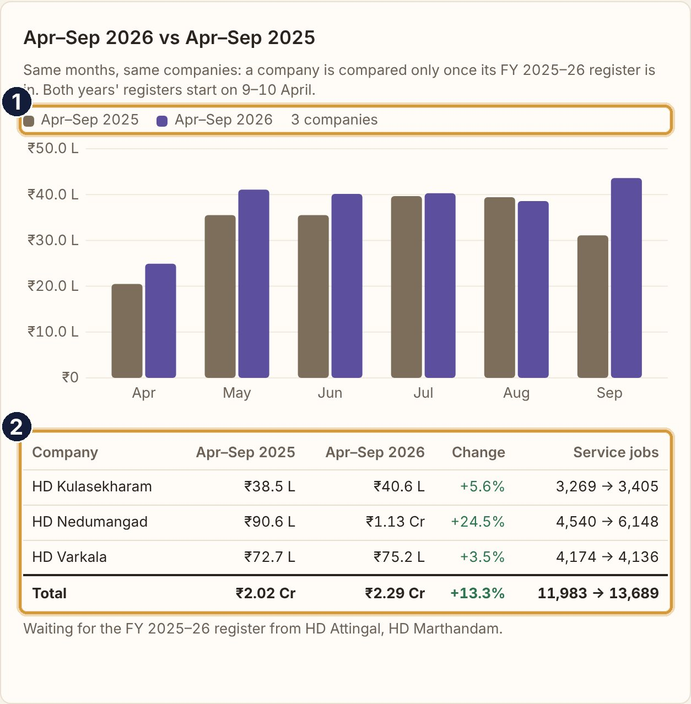
Apr–Sep 2026 against Apr–Sep 2025, month by month, for companies that have both years loaded: 1 legend, 2 the table by company with the change and service jobs.
The comparison is like for like: every register starts on 9 or 10 April in both years. Companies whose FY 2025–26 register has not arrived are named under the chart.
Lens 3 · Inventory
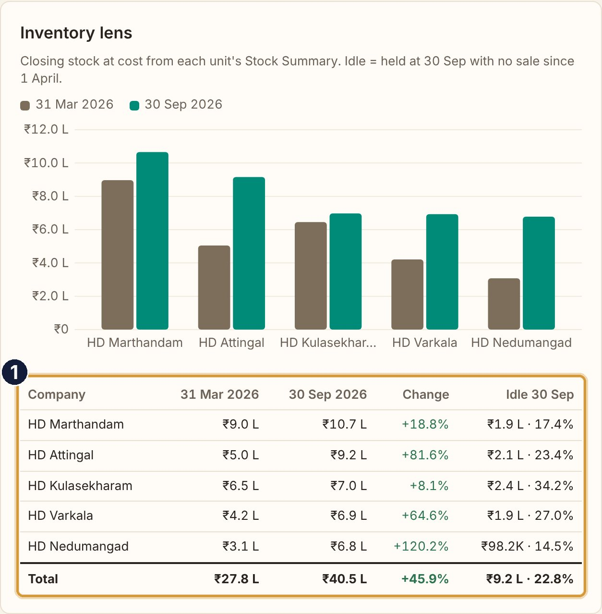
Closing stock at cost on 31 March and 30 September by company, and 1 the idle share. Pick one company to see it by stock group instead.
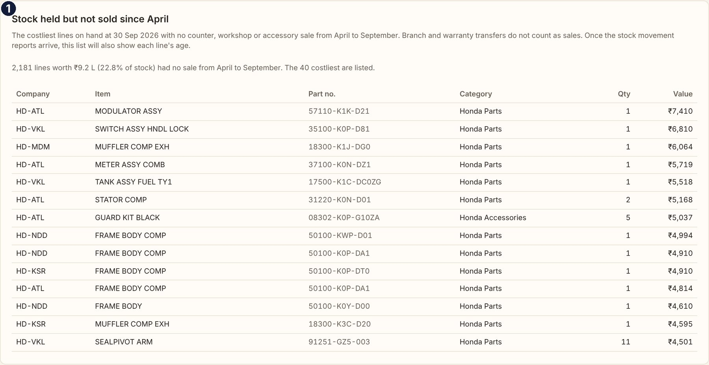
1 the summary line, then the 40 costliest lines held at 30 September with no sale since April.
LensIdle stock = a line held at 30 September with no counter, workshop or accessory sale from 1 April. Branch and warranty transfers do not count as sales. Lines are matched to sales by their Tally name, or by the part code when the name was edited.
Lens 4 · Control
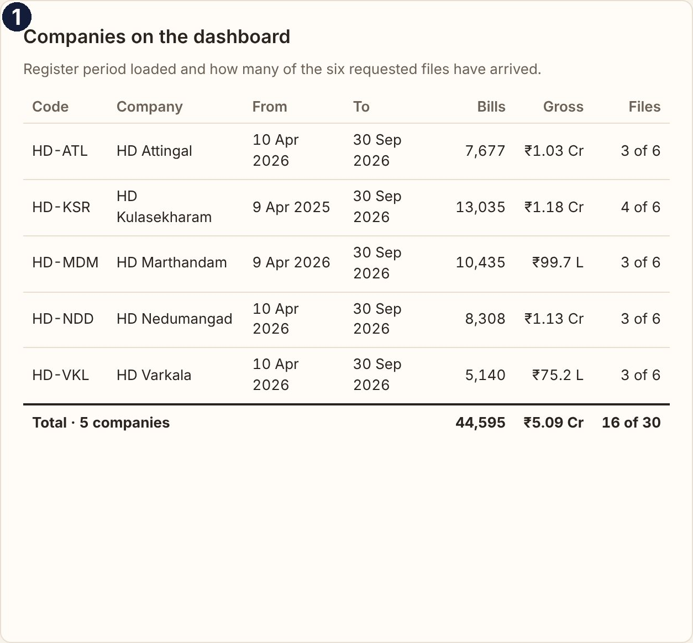
Companies on the dashboard with their register periods, bills and gross, and 1 how many of the six requested files each has sent. The data-completeness table below it lists every file and its status.
Sticky noteEvery company's figures reconcile to its register's own Grand Total, and every stock summary to its own. The build refuses a file that does not add up, so a number on this page is a number in Tally.
Report builder
Turn the dashboard into a PDF or Excel report, with subtotals, grand totals and a verification QR code.
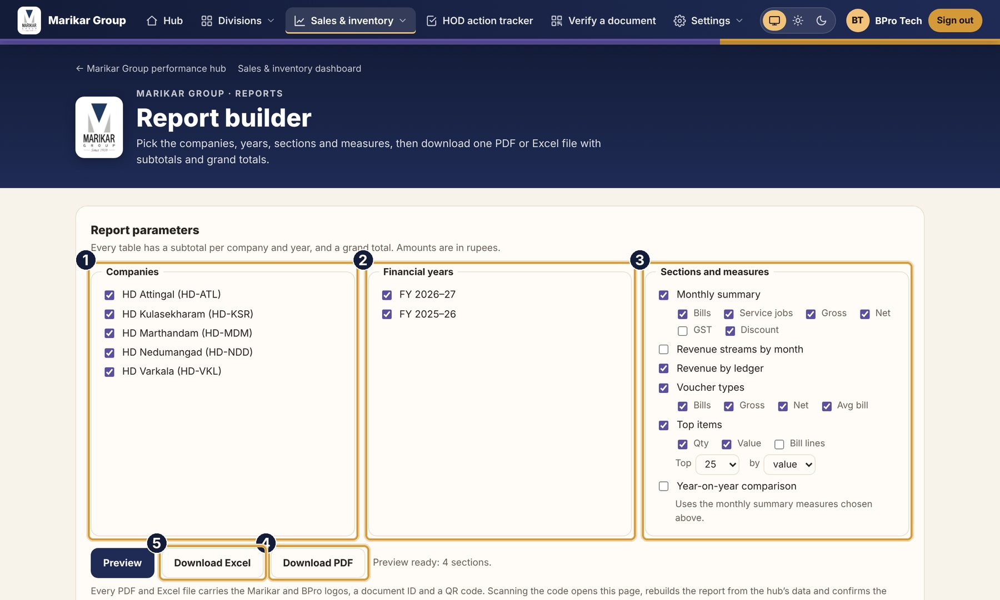
Choose 1 companies, 2 financial years and 3 sections and measures; the preview updates as you go. Then 4 Download PDF or 5 Download Excel.
Tick the companies to include, or leave all ticked for a group report.
Pick one financial year, or two to add a year-on-year section.
Choose the sections (monthly, streams, heads, voucher types, items) and the measures within each: quantity, value, bills, gross, net, GST, discount.
Check the preview, then download. Each table carries a subtotal per company and year and a grand total.
What every download carries
The Marikar and BPro logos, the report title, the filters used and the date.
A document ID of the form MGR-20261014-a1b2c3.
A QR code. Scanning it reopens the report builder with the same settings and recomputes the report; if the figures match, the report is confirmed genuine. The Excel file has the same ID and link.
CautionA report is a snapshot of the data loaded at the time. If more companies or months are loaded later, the same settings give a different (newer) report and the old one will no longer verify. Keep the date and ID with any figure you quote.
HOD action tracker
The 31 actions agreed at the 9 October 2026 HOD meeting, with owners, due dates and a league table.
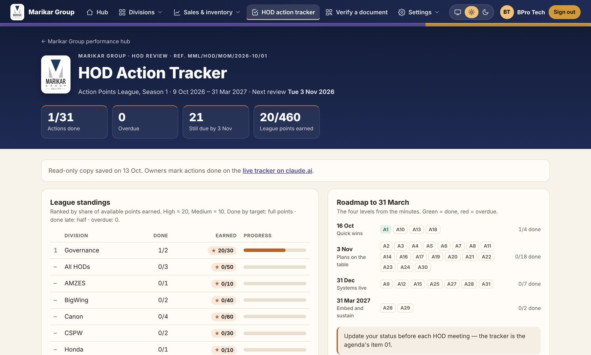
The tracker: league standings, the roadmap to 31 March, presentation uploads and all actions.
Section
What it shows
League standings
The Action Points League: who has closed how many of their actions, in order.
Roadmap to 31 March
The actions laid out by month to the year end.
Presentation uploads
Which divisions have uploaded their decks for the next review.
All actions
Every action with its ID, owner, due date and status.
Good to knowThe hub shows a read-only copy of the tracker. Owners mark actions done on the live tracker on claude.ai; the copy here is refreshed with each hub release.
BadgeFind your own actions in the tracker and note their due dates: that is the Owner badge.
Reconciliation note and document verification
The reconciliation note
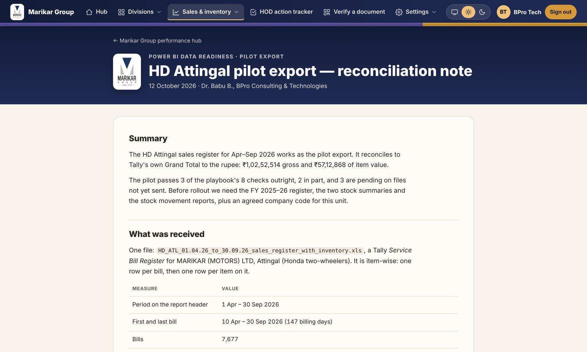
The pilot reconciliation note: how the HD Attingal export reconciled to Tally, the checklist against the data playbook, and the files still needed from Accounts.
The note is also issued as a PDF on BPro letterhead, document RN-HDATL-2026-01, with a verification QR code. Read it to understand how a Tally export becomes a dashboard, and what Accounts must export for each company.
Verifying a document
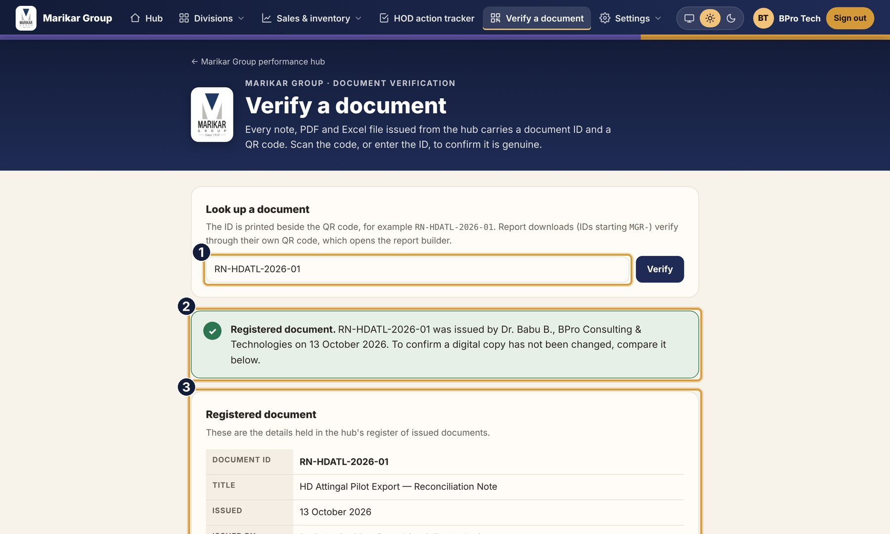
Enter the 1 document ID (or scan the QR code), read the 2 result and the 3 registered details. For a digital copy, drop the file on the page to compare its fingerprint with the register.
This page needs no sign-in, so anyone who receives a hub document can check it. IDs starting RN- are fixed documents held in the register; IDs starting MGR- are report downloads, which verify through their own QR code in the report builder.
LensA fingerprint is a SHA-256 hash of the file: a 64-character code that changes if even one byte of the file changes. The verify page computes it in your browser; the file is not uploaded anywhere.
Settings
Appearance
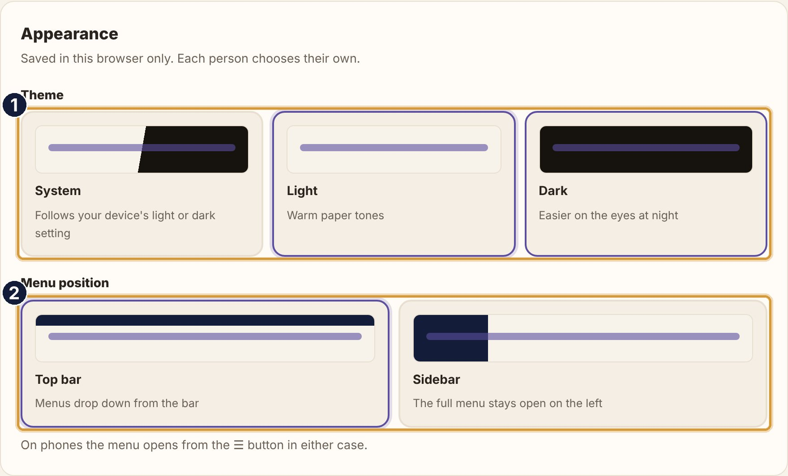
1 Theme: System, Light or Dark. 2 Menu position: top bar or sidebar. Both are saved on that browser only.
Password
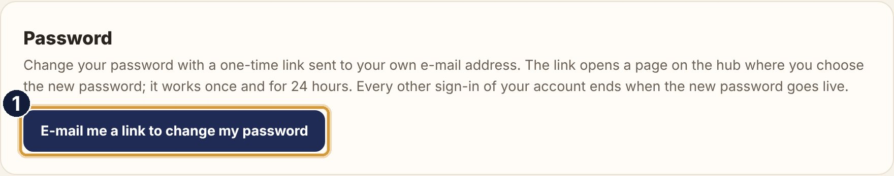
1 sends a one-time link to your own address; open it and choose the new password (chapter 3, "Forgot your password"). The link works once and for 24 hours; the change is live within about ten minutes and ends your other sign-ins.
People (admins and super admins)
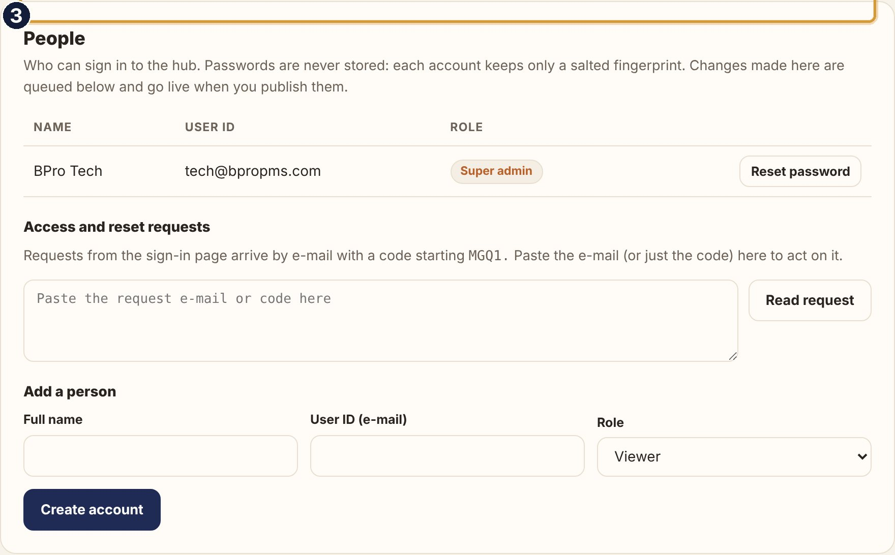
1 the accounts, with a role drop-down, the divisions each may open, Reset password and Remove · 2 the division editor, opened by clicking a viewer's divisions.
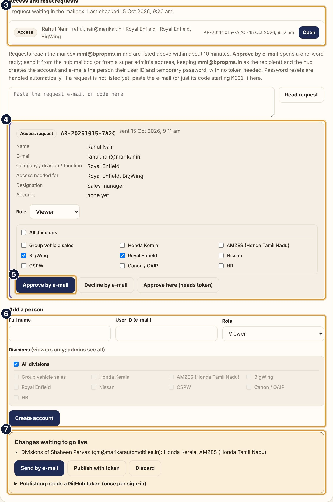
3 the requests waiting in the hub mailbox, with when it was last read, and Open · 4 the request read back, with the role and the divisions ticked on the form · 5Approve by e-mail (and Decline by e-mail) · 6 Add a person · 7 the changes waiting to go live, sent as one e-mail.
Everything on this page works the same way: a change is queued under Changes waiting to go live, then Send by e-mail opens one e-mail to the hub mailbox with the changes as plain lines. Send it from your own address as it is. The hub reads the mailbox within about ten minutes, applies the changes, e-mails the people concerned (a new password, a changed role, a changed set of divisions, a removal) and records each change in the Account changes log below. Nothing to copy and no token needed. A super admin who holds a GitHub token can still Publish with token instead.
Changing a role or a person's divisions
Pick the new role from the drop-down on the person's row. Admins can set Viewer or Admin; only a super admin can grant Super admin.
Click the divisions shown on a viewer's row (for example "All divisions"). The editor opens under the table: tick All divisions, or tick the divisions the person may open. Every tick is queued at once; Done closes the editor. Admins and super admins always see all divisions, so the editor is for viewers only.
Reset password queues a one-time link to choose a new password, e-mailed to the person's own address. Remove queues the removal; you cannot remove yourself or the last super admin, and an admin cannot change, reset or remove a super admin.
Click Send by e-mail and send the message that opens.
Adding a person
Enter the full name, the work e-mail (their user ID) and a role. For a viewer, tick All divisions or the divisions they may open, then Create account.
The account is queued. Click Send by e-mail and send the message.
Within about ten minutes the hub creates the account and e-mails the person a one-time link to choose their password, with their user ID and, where limited, their divisions. There is no password to copy or pass on.
Acting on a request
Requests from the sign-in page go to the hub mailbox mml@bpropms.in. The hub reads that mailbox every ten minutes, acknowledges each new request to the person who sent it, and lists it at the top of the People page: who asked, for which division, which divisions they ticked, the reference and the time. Approval is one e-mail; the hub does the rest.
Open Settings → People. New requests are listed under Access and reset requests; the line above them says when the mailbox was last read. Click Open to see the full request.
Check the role and the divisions. The divisions come pre-ticked from the form; change them if the request asks for more than the person should have. An admin or super admin role covers all divisions.
Click Approve by e-mail. A reply opens in your mail app addressed to the hub mailbox with the word approve, the role and the divisions (for example approve viewer for RE,BIGWING); send it as it is. Decline by e-mail works the same way.
Within about ten minutes the hub creates the account, e-mails the person a one-time link to choose their password, and takes the request off the list.
You can also act without opening the page: send an e-mail from your own address to mml@bpropms.in. For approvals, put approve in the subject and the references one per line in the body (for example AR-20261015-0546); add admin for an admin account, or for HONDA,AMZES to limit a viewer to those divisions (otherwise the divisions ticked on the form apply). For other changes, write one line each: role <user id> admin, divisions <user id> HONDA,NISSAN (or all), reset <user id>, remove <user id>, add <user id> Full Name as viewer for CSPW. The division keys are GROUP, HONDA, AMZES, BIGWING, RE, NISSAN, CSPW, CANON and HR. The hub accepts these e-mails only from the administrator addresses it knows and from the mailbox itself.
Sticky noteIf a request has waited more than a day, the hub sends you one reminder a day listing what is open. Two requests from the same e-mail address (someone pressing Send twice) are settled together.
TipPhone numbers are shown in the request e-mail, not on this page: the list is published with the site, so it carries only what an approval needs. Password resets never reach this page: they are settled automatically, and the new password goes only to the account's own address.
Account changes
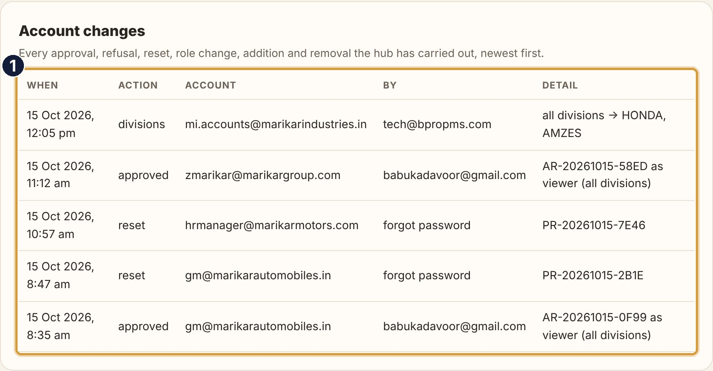
1 every approval, refusal, reset, role change, change of divisions, addition and removal the hub has carried out, newest first: when, what, which account, who asked for it and the detail. Shown to admins and super admins.
Sign-in report
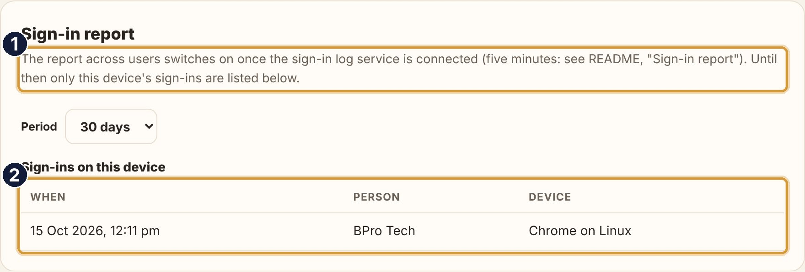
1 the state of the report across users; 2 the sign-ins recorded on this device (the last 20), which everyone sees.
Every successful sign-in is noted on the device it happened on. The report across users, which lists who signed in when, on what kind of device and how often, with a period of 7, 30 or 90 days and a CSV download, switches on once the small sign-in log service is connected (a five-minute set-up described in the README under "Sign-in report"). Until then the panel says so and shows this device's sign-ins only.
LensPasswords are never stored. Each account keeps only a salted fingerprint of its password (PBKDF2-SHA-256, 210,000 rounds). A password exists only in the e-mail sent to its owner, which is why a forgotten password is replaced, never recovered.
CautionApprove here (needs token) and Publish with token write the change from the browser and need a GitHub token; they remain for the super admin who holds one. Everyone else uses the e-mail route, which needs no token at all.
Hub Explorer
A light-hearted way to make sure everyone knows the hub. Tick the boxes as you go; the quiz at the end checks what stuck. Answers are at the end of the chapter.
BBronze · Visitor
Sign in and reach the hub page
Open your own division's dashboard
Hover a KPI tile and read its source
Install the hub on your phone
SSilver · Navigator
Switch between light and dark theme
Try the sidebar, then go back to the top bar
Open a division group (Automotive)
Find your actions in the HOD tracker
GGold · Analyst
Filter the sales dashboard to one company and one year
Read the idle-stock list for your unit
Build and download a PDF report
Verify that report's QR code
PPlatinum · Owner
Bring a missing prior-year figure for your division
Close an action in the tracker before its due date
Get your unit's FY 2025–26 register loaded
Score 9 or more in the quiz below
The quiz
What is your user ID on the hub? a) a number issued by IT · b) your work e-mail address · c) your employee code
"Net revenue" on the sales dashboard is: a) gross billing minus GST · b) income ledgers minus discounts, without GST · c) gross billing minus discounts
A line is "idle stock" when: a) it has not sold for 30 days · b) it was held at 30 September with no sale since 1 April · c) it was transferred to a branch
Which of these is a division group? a) Honda Kerala · b) Automotive · c) CSPW
Every figure on the sales dashboard reconciles to: a) the division's deck · b) the register's Grand Total in Tally · c) last year's audited accounts
What does the QR code on a report do? a) opens the hub home page · b) rebuilds the report with the same settings and checks the figures · c) downloads the Excel version
A forgotten password is: a) e-mailed back to you · b) replaced with a new temporary one by the administrator · c) shown in Settings
On a phone the menu opens from: a) the ☰ button · b) a long press on the logo · c) the Settings page
"All years" on the sales dashboard is best used when: a) always · b) every company has both years loaded · c) never
Who built the hub? a) the IT department · b) Dr. Babu B., BPro Consulting & Technologies · c) TallyPrime
Answers1 b · 2 b · 3 b · 4 b · 5 b · 6 b · 7 b · 8 a · 9 b · 10 b. Nine or more: Platinum.
Frequently asked questions
I typed the right password and it says they don't match.
Check Caps Lock (the page warns you), and that you are using the e-mail address you registered with. After a password reset the old one stops working as soon as the change is published. If an installed app still refuses, open the site in the browser once, or reload with Ctrl+Shift+R.
Why does my division show "Still missing" items?
The deck for the HOD meeting did not contain that figure. Send it to the administrator and the dashboard is updated; nothing is estimated in the meantime.
The sales dashboard shows only five companies.
Only the Honda two-wheeler units' Tally exports have been received so far. Other companies appear as their exports arrive; the control lens lists what each company has sent.
Why is April smaller than the other months?
Every register starts on 9 or 10 April, so April is a short month in both years. The year-on-year comparison is still like for like.
Can I share a report outside the group?
Reports are for internal circulation. If one must be shared, the recipient can check it is genuine with the QR code, which is the point of the verification.
Does the hub work offline?
The installed app opens offline with the last data it saw and says so. New data needs a connection.
Where is my data stored?
Aggregated figures are published with the hub. Raw Tally exports with customer details stay with Accounts and are never uploaded.
Can I change my own password?
Yes: Settings → Password sends a one-time link to your address; the page it opens lets you choose the new one. "Forgot password?" on the sign-in page does the same without signing in.
Does anyone see my password?
No. It is chosen in your browser and only its fingerprint is sent to the hub. Nobody can read it back, which is why a forgotten password is replaced, never recovered.
The page looks different from the screenshots.
You may be on a different theme or menu layout; both are in Settings → Appearance. New versions also add features; the update message lists them.
How do I get a colleague access?
Ask them to use Request access on the sign-in page, choosing their function or division and ticking the divisions they need. An admin approves it within a working day.
Why can I not see a division, or the Sales & inventory menu?
Your account covers only some divisions. The Divisions menu lists the ones you have, and Sales & inventory needs Honda Kerala or AMZES. Ask an admin to change your divisions from Settings → People; the change applies from your next sign-in.
How do I limit someone to their own division?
Settings → People: click the divisions shown on their row, tick the right ones, then Send by e-mail. Or e-mail divisions <user id> HONDA to mml@bpropms.in from your own address.
Where is the login report?
Settings → Sign-in report. Everyone sees the sign-ins made on their own device; admins see the report across users once the sign-in log service is connected.
A change I expect is not showing.
Click Refresh in the bar. It reloads with fresh data and picks up a new version if one was published.
Who do I contact?
mml@bpropms.in for access and sign-in; your division's HOD for figures; BPro (www.bpropms.com) for the hub itself.
Rarely asked questions
Questions nobody asks until they need to.
Why do the browser tab and the app icon show only the "M", not the whole logo?
At 16 pixels the wordmark is unreadable; the emblem alone stays crisp. The full logo is on every page.
What happens if two super admins publish account changes at the same time?
The second publish is refused with "the file changed on GitHub meanwhile; try again". Nothing is lost; the second person simply publishes again.
Can the request code in an access e-mail be forged?
It can be typed by anyone, which is why the super admin reviews every request and the new password is sent to the e-mail address in the request, not to whoever sent it.
What does a requester receive, and when?
An acknowledgement with the reference within about ten minutes of sending the request, then, once approved, an e-mail from mml@bpropms.in with the user ID, a temporary password and the hub's address. Both go to the work e-mail typed in the form.
Can I approve from my phone?
Yes. Reply "approve" to the request e-mail from the hub mailbox (add "for HONDA,AMZES" to limit the divisions), or send a new e-mail to mml@bpropms.in with the subject "approve" and the references in the body. The hub acts within about ten minutes.
Can two admins change the same person at once?
Yes. Each e-mail is applied in turn; the later one wins, and both appear in the Account changes log with who sent them.
Why does "Thought for the day" change every seven seconds?
Seven quotes, seven seconds each. Hover it to pause, or use the dots. Under a reduced-motion setting it stays still.
Why is a bill sometimes counted as negative?
In a few bills the discount exceeds the bill, so the true amount is negative, but Tally's export drops the minus sign. The build detects these from each bill's ledger arithmetic; that is what makes the totals match the Grand Total.
Why does Marthandam's export look different from the others?
Its discounts are exported as negative amounts while the other units export them as positive. The build uses the size of the amount, so both reconcile.
Can I open the hub from the old github.io address?
Yes; it redirects to mmlpbi.bpropms.in, so QR codes printed before the move keep working.
I tapped Install and nothing happened.
Chrome shows its install dialog only on sites it considers "engaged with", which can take a second visit. The card will be back; try again then. On iPhone the Share → Add to Home Screen route always works.
Is the hub a Power BI report?
No. It is a purpose-built web application with its own charts, reports and verification, which is why it runs on a phone without any licence.
Troubleshooting
Symptom
Likely cause
What to do
Sign-in refused right after a new account or reset
The browser or app still has the previous version cached
Reload once with Ctrl+Shift+R (Mac: Cmd+Shift+R), or tap Update in the app.
Charts are empty, cards say "Loading"
No connection, or a blocked script
Check the connection; the hub needs d3 and the report libraries from public CDNs. Corporate firewalls that block cdnjs or jsdelivr stop the charts.
"Failed to load" on a card
A data file could not be fetched
Reload. If it persists, tell mml@bpropms.in which card and the time.
The update message keeps reappearing
An old tab is still open
Close every tab of the hub, open it once more and tap Update.
A report's QR code says the figures do not match
Data was reloaded since the report was made
Expected: the report is a snapshot. Build a fresh one.
The sidebar covers the page on a small laptop
Sidebar mode below 900 px becomes a drawer
Use the ☰ button, or switch to the top bar in Settings.
The reset link says it has expired or been used
Links work once and for 24 hours; a newer request replaces the older link
Request a new link from the sign-in page or Settings → Password and use the latest e-mail.
I set a password but cannot sign in yet
The hub applies it within about ten minutes and confirms by e-mail
Wait for the confirmation, then press Refresh in the bar or reload the sign-in page.
A page sends me back to the hub with a note
The page is outside the divisions on your account
Ask an admin to add the division from Settings → People, then sign out and in again.
An account change sent by e-mail has not been applied
The e-mail went to someone else, or was sent from an address the hub does not know
Send it to mml@bpropms.in from your own admin address, one change per line. The log under Settings → Account changes shows what was applied.
Publishing accounts says the token was not accepted
Token expired or lacks Contents: write
Create a new fine-grained token for the repository with Contents read and write, paste it again.
Version history
Each release raises the app version; installed copies show an update message with the notes.
Version
Date
What changed
2026.10.15l
15 Oct 2026
Passwords by one-time link: resets, new accounts and administrator resets send a link to the person's own address, who chooses the password on the hub; nothing is e-mailed in clear. Settings → Password for signed-in people. A changed password ends other sign-ins. User manual v1.5.
2026.10.15k
15 Oct 2026
Audit fixes: removed accounts signed out at once; role and division changes apply on the next page load; clerk schedule off the round minutes.
2026.10.15j
15 Oct 2026
User manual v1.4; the division editor on the People page opens under the table.
2026.10.15i
15 Oct 2026
Access by division: viewer accounts limited to chosen divisions; the request form asks which; the menu, division dashboards and Sales & inventory follow the account's scope; division editor on the People page.
2026.10.15h
15 Oct 2026
Refresh in the bar; People page for admins as well as super admins, with roles, resets, additions and removals applied by one e-mail; Account changes log; sign-in report.
2026.10.15g
15 Oct 2026
Audit hardening of the mailbox clerk: masked addresses in logs, acknowledgement cap, administrator reset from the Actions tab.
2026.10.15f
15 Oct 2026
Every access request is acknowledged to the requester as soon as it is listed; the administrator is reminded once a day of requests waiting more than a day.
2026.10.15e
15 Oct 2026
Approvals by e-mail: "approve" or "decline" to the hub mailbox creates the account and e-mails the user ID and password. Password resets automatic. Approve by e-mail / Decline by e-mail on the People page.
2026.10.15d
15 Oct 2026
User manual v1.2.
2026.10.15c
15 Oct 2026
Requests appear in Settings → People on their own: the hub mailbox is read every 15 minutes; approving or declining and publishing takes a request off the list.
2026.10.15b
15 Oct 2026
The request-access and reset forms can post straight to the hub mailbox once a form key is configured.
2026.10.15a
15 Oct 2026
FY 2025–26 registers for Nedumangad and Varkala: year on year now compares three units against the same months of 2025.
2026.10.14m
14 Oct 2026
User manual v1.1.
2026.10.14l
14 Oct 2026
Install-the-app invitation on every visit (one tap on Android, Chrome, Edge; steps on iPhone), Install app button, shortcuts and screenshots in the install dialog, iPhone full-screen polish.
2026.10.14k
14 Oct 2026
Request access lists corporate functions (Finance, Admin, HR, IT, Audit, Marketing) and asks what access is needed.
2026.10.14j
14 Oct 2026
This user manual, on the hub page and in the menu.
2026.10.14i
14 Oct 2026
Favicon and app icons from the Marikar emblem.
2026.10.14h
14 Oct 2026
Hub mailbox mml@bpropms.in; mail relay for requests prepared.
2026.10.14g
14 Oct 2026
Request access and password reset on the sign-in page; requests desk for the super admin.
2026.10.14f
14 Oct 2026
Menu bar or sidebar on every page, Light/Dark/System theme, division groups, Settings with People.
2026.10.14e
14 Oct 2026
Sign-in page redesign: thought for the day, principles ticker, animated chart.
2026.10.14d
14 Oct 2026
Sign-in fix: scripts load fresh when online so account changes apply at once.
2026.10.14c
14 Oct 2026
Marikar logo prominent on the sign-in page; super admin account.
2026.10.14b
14 Oct 2026
Five Honda units loaded from Tally; year-on-year and inventory lenses; idle stock list.
Division dashboards for nine divisions; installable app with update message; BPro branding, warm palette and QR verification on every download; reconciliation note PDF on letterhead; financial position panel.
2026.10.12
12 Oct 2026
HD Attingal pilot dashboard; multi-company data model; hub landing page; report builder with subtotals and grand totals; HOD action tracker copy.
This manual is version __VERSION__, issued __DATE__, document __DOCID__. It describes app version 2026.10.15l. Changes since v1.4: passwords by one-time link (Forgot your password, Settings → Password, the People page steps, FAQ and troubleshooting). Changes since v1.3: access by division (roles table, the new section in Getting started, the request form), the Refresh control, the People page for admins with the division editor and the e-mail route for every change, the Account changes log, the Sign-in report, and new FAQ and troubleshooting entries.
Glossary
AMC
— annual maintenance contract; AMC service bills are counted as service jobs.
Admin
— an account that manages people (roles, divisions, resets, additions, removals, approvals) for every account except super admins.
Divisions (of an account)
— the list of divisions a viewer may open: All divisions, or a chosen set; set on approval and changed from Settings → People.
Division group
— a consolidation page showing several divisions together (Automotive, Parts & distribution, Office automation, People).
Document ID
— the code printed on every hub document (RN-…, MGR-…, UM-…) that the verify page checks.
Fingerprint
— the SHA-256 hash of a file, used to confirm a digital copy is unchanged; also the salted hash the hub keeps instead of a password.
One-time link
— the e-mailed link that opens the page where a person chooses their password; single use, 24 hours.
FY
— financial year, 1 April to 31 March. FY 2026–27 runs from 1 April 2026.
Grand Total
— the last line of a Tally register or stock summary, which every build must match.
Gross billing
— everything invoiced including GST.
H1
— the first half of the financial year, April to September.
HOD
— head of department; the HOD meeting reviews every division.
Idle stock
— a line held at the balance date with no sale since the start of the year.
Lens
— one of the four sections of the sales dashboard: sales, year on year, inventory, control.
Net revenue
— income ledgers minus discounts, without GST.
Register
— TallyPrime's Service Bill Register export, one per company per financial year.
Stock summary
— TallyPrime's closing stock report at a balance date, by stock group and item.
Super admin
— the account with every right, including over admins and super admins, and the token route for publishing.
Voucher type
— Tally's bill category: service bill, AMC service bill, spare sale invoice, local sales, branch transfer.
Support and credits
Need
Contact
Access, passwords, sign-in problems
mml@bpropms.in
A figure on your division's page
Your division HOD, who sends corrections to the administrator
Tally exports and the data request
Accounts, following the reconciliation note's checklist
The hub itself: features, faults, this manual
BPro Consulting & Technologies · www.bpropms.com
Designed and developed by Dr.Babu.B BPro Consulting & Technologies www.drbabu.in | www.bpropms.com Analytics partner to Marikar Group · HRMS, PMS, LMS, Consulting, Process.ai
This manual is issued for Marikar Group users. Internal circulation. Document __DOCID__ · verify at __VERIFY__
Marikar Group performance hub
mmlpbi.bpropms.in
Data → insight → action. Every figure reconciled to its source. Decide on evidence, not opinion.